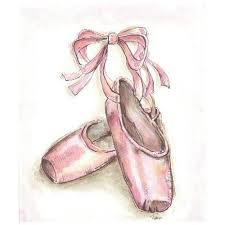
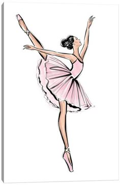
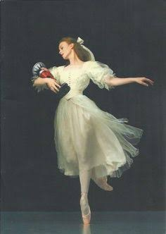
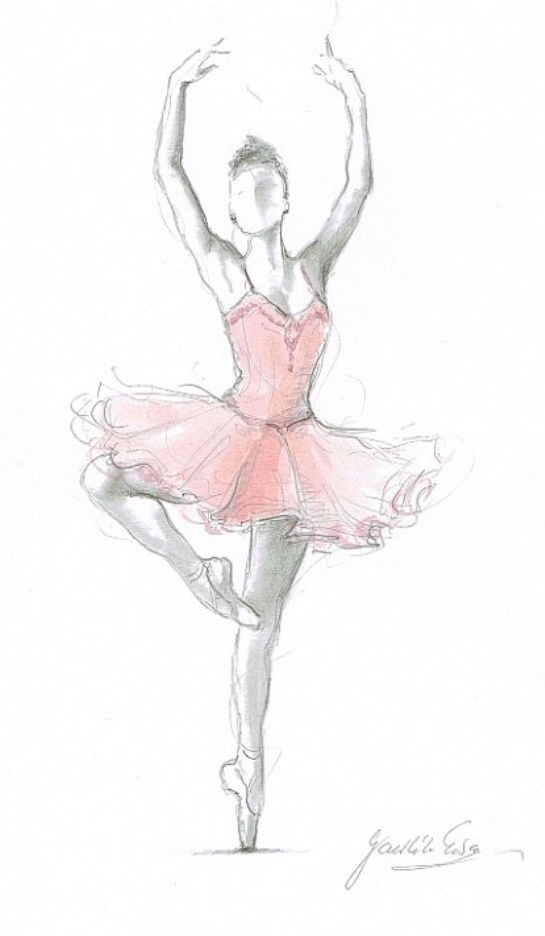
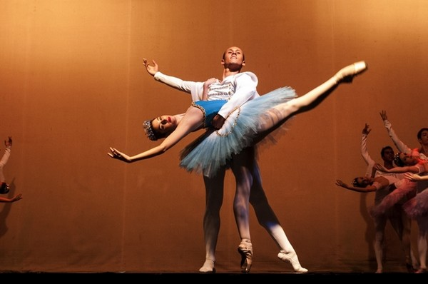
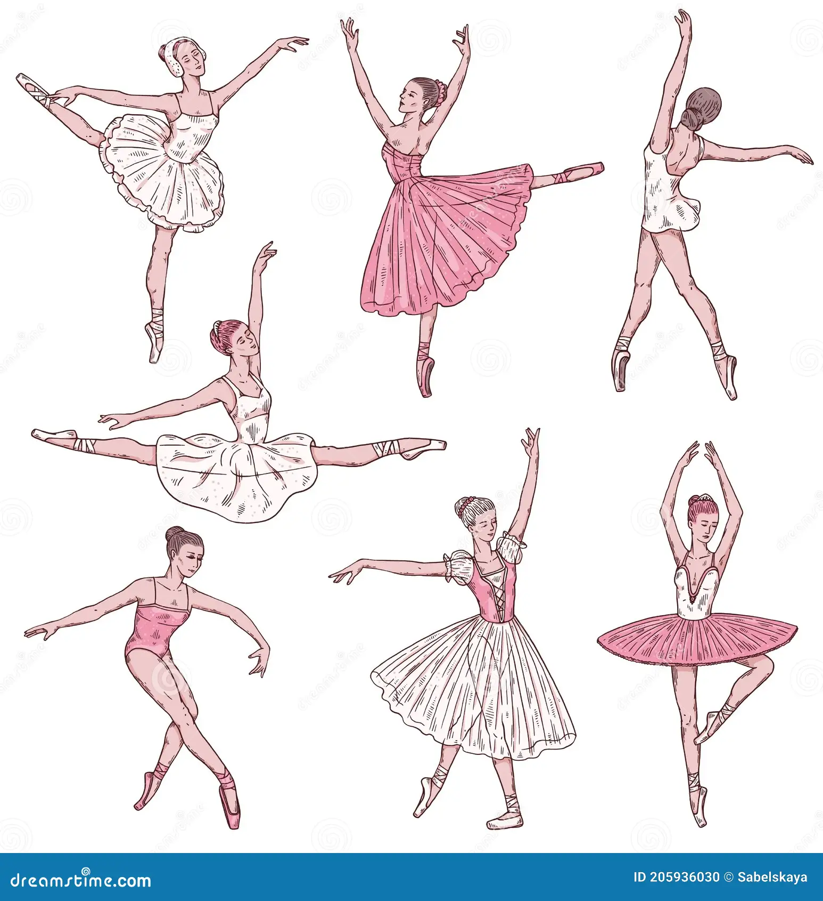
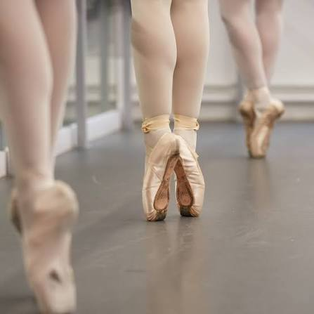

.jpg)
Ballet blog
Por: Beatriz Grando
Bem-vindo(a)! Aqui você encontra tudo sobre o universo do balé e da dança!

Vou compartilhar conhecimentos sobre o ballet
Por: Beatriz Grando
Bem-vindo(a)! Aqui você encontra tudo sobre o universo do balé e da dança!


Por: Beatriz Grando
O ballet nasceu na Itália no século XV como espetáculo das cortes e foi levado à França no século XVI, onde ganhou forma técnica e artística. No século XVII, com o apoio de Luís XIV, foram estabelecidas suas bases clássicas.


Por: Beatriz Grando
O ballet clássico é a forma mais tradicional e estruturada do ballet, desenvolvido principalmente na França e na Rússia entre os séculos XVII e XIX. Ele se caracteriza por disciplina rigorosa, técnica refinada e estética elegante.


Por: Beatriz Grando
Cinco posições: base de todos os movimentos, definidas no século XVII. Uso das pontas: bailarinas dançam na ponta dos pés, criando leveza e ilusão de flutuar. En dehors: rotação externa das pernas, essencial para a estética clássica. Figurino tradicional: tutu, collant e sapatilhas, reforçando a elegância. Música clássica: geralmente acompanhada por grandes compositores como Tchaikovsky.
